allEmseq
caitlinpage
2026-10-19
Last updated: 2026-10-23
Checks: 7 0
Knit directory: methyl_nano_cf/analysis/
This reproducible R Markdown analysis was created with workflowr (version 1.7.1). The Checks tab describes the reproducibility checks that were applied when the results were created. The Past versions tab lists the development history.
Great! Since the R Markdown file has been committed to the Git repository, you know the exact version of the code that produced these results.
Great job! The global environment was empty. Objects defined in the global environment can affect the analysis in your R Markdown file in unknown ways. For reproduciblity it’s best to always run the code in an empty environment.
The command set.seed(20250606) was run prior to running
the code in the R Markdown file. Setting a seed ensures that any results
that rely on randomness, e.g. subsampling or permutations, are
reproducible.
Great job! Recording the operating system, R version, and package versions is critical for reproducibility.
Nice! There were no cached chunks for this analysis, so you can be confident that you successfully produced the results during this run.
Great job! Using relative paths to the files within your workflowr project makes it easier to run your code on other machines.
Great! You are using Git for version control. Tracking code development and connecting the code version to the results is critical for reproducibility.
The results in this page were generated with repository version 86b30a0. See the Past versions tab to see a history of the changes made to the R Markdown and HTML files.
Note that you need to be careful to ensure that all relevant files for
the analysis have been committed to Git prior to generating the results
(you can use wflow_publish or
wflow_git_commit). workflowr only checks the R Markdown
file, but you know if there are other scripts or data files that it
depends on. Below is the status of the Git repository when the results
were generated:
Ignored files:
Ignored: .RData
Ignored: .Rproj.user/
Ignored: analysis/.RData
Ignored: analysis/GDCdata/
Ignored: analysis/LOLACore/
Ignored: analysis/Rplots.svg
Ignored: analysis/ewascatalog_results.txt.gz
Ignored: analysis/figure/
Ignored: analysis/geo_data/
Ignored: analysis/table.html
Untracked files:
Untracked: analysis/MANIFEST.txt
Untracked: analysis/hg19ToHg38.over.chain
Untracked: analysis/pleaseRun.Rmd
Untracked: analysis/session_info.txt
Untracked: renv.lock
Untracked: renv/
Unstaged changes:
Modified: .Rprofile
Modified: .gitignore
Modified: _workflowr.yml
Modified: analysis/dtuDiffGroupsAndGst.Rmd
Note that any generated files, e.g. HTML, png, CSS, etc., are not included in this status report because it is ok for generated content to have uncommitted changes.
These are the previous versions of the repository in which changes were
made to the R Markdown (analysis/allEmseq.Rmd) and HTML
(docs/allEmseq.html) files. If you’ve configured a remote
Git repository (see ?wflow_git_remote), click on the
hyperlinks in the table below to view the files as they were in that
past version.
| File | Version | Author | Date | Message |
|---|---|---|---|---|
| Rmd | 86b30a0 | caitlinpage | 2026-10-23 | wflow_publish("allEmseq.Rmd") |
| Rmd | bc1cf0f | caitlinpage | 2026-10-23 | init commit, and pca plots of betas with most of available samples |
Introduction
library(data.table)
library(plyranges)Loading required package: BiocGenerics
Attaching package: 'BiocGenerics'The following objects are masked from 'package:stats':
IQR, mad, sd, var, xtabsThe following objects are masked from 'package:base':
anyDuplicated, aperm, append, as.data.frame, basename, cbind,
colnames, dirname, do.call, duplicated, eval, evalq, Filter, Find,
get, grep, grepl, intersect, is.unsorted, lapply, Map, mapply,
match, mget, order, paste, pmax, pmax.int, pmin, pmin.int,
Position, rank, rbind, Reduce, rownames, sapply, saveRDS, setdiff,
table, tapply, union, unique, unsplit, which.max, which.minLoading required package: IRangesLoading required package: S4VectorsLoading required package: stats4
Attaching package: 'S4Vectors'The following objects are masked from 'package:data.table':
first, secondThe following object is masked from 'package:utils':
findMatchesThe following objects are masked from 'package:base':
expand.grid, I, unname
Attaching package: 'IRanges'The following object is masked from 'package:data.table':
shiftLoading required package: GenomicRangesLoading required package: GenomeInfoDb
Attaching package: 'plyranges'The following object is masked from 'package:IRanges':
sliceThe following object is masked from 'package:data.table':
betweenThe following object is masked from 'package:stats':
filterlibrary(tidyr)
Attaching package: 'tidyr'The following object is masked from 'package:S4Vectors':
expandlibrary(stringr)
library(dplyr)
Attaching package: 'dplyr'The following objects are masked from 'package:plyranges':
between, n, n_distinctThe following objects are masked from 'package:GenomicRanges':
intersect, setdiff, unionThe following object is masked from 'package:GenomeInfoDb':
intersectThe following objects are masked from 'package:IRanges':
collapse, desc, intersect, setdiff, slice, unionThe following objects are masked from 'package:S4Vectors':
first, intersect, rename, setdiff, setequal, unionThe following objects are masked from 'package:BiocGenerics':
combine, intersect, setdiff, unionThe following objects are masked from 'package:data.table':
between, first, lastThe following objects are masked from 'package:stats':
filter, lagThe following objects are masked from 'package:base':
intersect, setdiff, setequal, unionlibrary(ggplot2)Obtain beta values
seqs <- c("chr1", "chr2", "chr3", "chr4", "chr5", "chr6", "chr7", "chr8", "chr9", "chr10", "chr11", "chr12", "chr13", "chr14", "chr15", "chr16", "chr17", "chr18", "chr19", "chr20", "chr21", "chr22", "chrX", "chrY")process_wgbs_short <- function(bismark, bed = NULL) {
read <- bismark
names(read) <- c("read_id", "strand", "seqnames", "start", "meth_status")
read$end <- read$start
read_overlap <- read
setDT(read_overlap)
read_overlap[, meth_status := ifelse(meth_status == "Z", "M", "U")]
read_overlap[, meth_pattern := paste0(meth_status, collapse = ""), by = read_id]
read_overlap[, num_meth := str_count(meth_pattern, pattern = "M")]
read_overlap[, total := str_length(meth_pattern)]
read_overlap[, alpha := num_meth/total]
read_overlap[, genom_positions := paste0(start, collapse = ","), by = read_id]
read_overlap <- read_overlap %>% .[order(.$read_id),]
read_overlap[, read_start := min(start), by = read_id]
read_overlap[, read_end := max(start), by = read_id]
read_overlap <- data.frame(read_overlap)
read_overlap$start <- read_overlap$read_start
read_overlap$end <- read_overlap$read_end
cols <- c("seqnames", "start", "end", "read_start", "read_end", "strand", "read_id", "meth_pattern", "num_meth", "total", "alpha", "genom_positions")
read_overlap <- read_overlap[,cols]
read_overlap <- distinct(read_overlap)
read_overlap
}cancer_files <- list.files("/researchers/caitlin.page/cf_nano/fastq_tothill_emseq_cancer/emseq_cancer")[grep("CpG_OT", list.files("/researchers/caitlin.page/cf_nano/fastq_tothill_emseq_cancer/emseq_cancer"))]cancer_files <- cancer_files[grep(c("1031|1035|0791|0455|1033|1032|0790|1034"), cancer_files)]bis <- fread(paste0(path, cancer_files[1]))
a1 <- process_wgbs_short(bis)
a1 <- data.frame(a1)
a1 <- a1 %>% filter(seqnames %in% seqs)
a1$sample <- paste0("cancer_", c[1])
saveRDS(a1, paste0("/researchers/caitlin.page/cf_nano/r_output/emseq_cancer_", c[1], ".rds"))- rewrote the functions as bash script and ran as an sbatch job
- results saved as tsv file
- then same to get betas - rewrote as bash script and ran sbatch job
df <- read.table("/researchers/caitlin.page/cf_nano/r_output/emseq_cancer_PRJ240790.tsv")betas_for_wgbs <- function(reads) {
# Split entire columns at once (vectorised, not row-wise)
meth_split <- strsplit(reads$meth_pattern, "")
pos_split <- lapply(strsplit(reads$genom_positions, ","), as.double)
n <- lengths(meth_split) # CpGs per read
# Unnest with rep/unlist — much faster than tidyr::unnest
dt <- data.table(
sample = rep(reads$sample, n),
seqnames = rep(reads$seqnames, n),
start = unlist(pos_split, use.names = FALSE),
meth_status = unlist(meth_split, use.names = FALSE)
)
# Count M/U and compute beta in one grouped pass
result <- dt[, {
m <- sum(meth_status == "M")
u <- sum(meth_status == "U")
list(meth_count_pos = m, unmeth_count_pos = u, beta = m / (m + u))
}, keyby = .(seqnames, start)]
# Collapse across samples (matches original behaviour)
unique(result[, .(seqnames, start, meth_count_pos, unmeth_count_pos, beta)])
}build df with beta values from all samples
b <- read.table("/researchers/caitlin.page/cf_nano/r_output/beta_PRJ240790.tsv", header = TRUE)
head(b) seqnames start meth_count_pos unmeth_count_pos beta
1 chr1 10469 12 3 0.800000
2 chr1 10471 12 3 0.800000
3 chr1 10484 13 2 0.866667
4 chr1 10489 14 1 0.933333
5 chr1 10493 12 3 0.800000
6 chr1 10497 13 2 0.866667b2 <- read.table("/researchers/caitlin.page/cf_nano/r_output/beta_PRJ240791.tsv", header = TRUE)
b3 <- read.table("/researchers/caitlin.page/cf_nano/r_output/beta_PRJ230455.tsv", header = TRUE)
b4 <- read.table("/researchers/caitlin.page/cf_nano/r_output/beta_PRJ241033.tsv", header = TRUE)
b5 <- read.table("/researchers/caitlin.page/cf_nano/r_output/beta_PRJ241034.tsv", header = TRUE)
b6 <- read.table("/researchers/caitlin.page/cf_nano/r_output/beta_PRJ241031.tsv", header = TRUE)
b7 <- read.table("/researchers/caitlin.page/cf_nano/r_output/beta_PRJ241035.tsv", header = TRUE)
b8 <- read.table("/researchers/caitlin.page/cf_nano/r_output/beta_PRJ241032.tsv", header = TRUE)library(purrr)
Attaching package: 'purrr'The following object is masked from 'package:GenomicRanges':
reduceThe following object is masked from 'package:IRanges':
reduceThe following object is masked from 'package:data.table':
transposedfs <- list(
b_0455 = b3 %>% select(seqnames, start, beta = beta),
b_0790 = b %>% select(seqnames, start, beta = beta),
b_0791 = b2 %>% select(seqnames, start, beta = beta),
b_1031 = b6 %>% select(seqnames, start, beta = beta),
b_1032 = b8 %>% select(seqnames, start, beta = beta),
b_1033 = b4 %>% select(seqnames, start, beta = beta),
b_1034 = b5 %>% select(seqnames, start, beta = beta),
b_1035 = b7 %>% select(seqnames, start, beta = beta))betas_rest <- imap(dfs, ~ .x %>% rename(!!.y := beta)) %>%
reduce(full_join, by = c("seqnames", "start"))dfs <- list(
m_0455 = b3 %>% select(seqnames, start, meth = meth_count_pos),
m_0790 = b %>% select(seqnames, start, meth = meth_count_pos),
m_0791 = b2 %>% select(seqnames, start, meth = meth_count_pos),
m_1031 = b6 %>% select(seqnames, start, meth = meth_count_pos),
m_1032 = b8 %>% select(seqnames, start, meth = meth_count_pos),
m_1033 = b4 %>% select(seqnames, start, meth = meth_count_pos),
m_1034 = b5 %>% select(seqnames, start, meth = meth_count_pos),
m_1035 = b7 %>% select(seqnames, start, meth = meth_count_pos))
meth_rest <- imap(dfs, ~ .x %>% rename(!!.y := meth)) %>%
reduce(full_join, by = c("seqnames", "start"))dfs <- list(
u_0455 = b3 %>% select(seqnames, start, unmeth = unmeth_count_pos),
u_0790 = b %>% select(seqnames, start, unmeth = unmeth_count_pos),
u_0791 = b2 %>% select(seqnames, start, unmeth = unmeth_count_pos),
u_1031 = b6 %>% select(seqnames, start, unmeth = unmeth_count_pos),
u_1032 = b8 %>% select(seqnames, start, unmeth = unmeth_count_pos),
u_1033 = b4 %>% select(seqnames, start, unmeth = unmeth_count_pos),
u_1034 = b5 %>% select(seqnames, start, unmeth = unmeth_count_pos),
u_1035 = b7 %>% select(seqnames, start, unmeth = unmeth_count_pos))
unmeth_rest <- imap(dfs, ~ .x %>% rename(!!.y := unmeth)) %>%
reduce(full_join, by = c("seqnames", "start"))dfs <- list(
c_0455 = b3 %>% mutate(cov = unmeth_count_pos + meth_count_pos) %>% select(seqnames, start, cov),
c_0790 = b %>% mutate(cov = unmeth_count_pos + meth_count_pos) %>% select(seqnames, start, cov),
c_0791 = b2 %>% mutate(cov = unmeth_count_pos + meth_count_pos) %>% select(seqnames, start, cov),
c_1031 = b6 %>% mutate(cov = unmeth_count_pos + meth_count_pos) %>% select(seqnames, start, cov),
c_1032 = b8 %>% mutate(cov = unmeth_count_pos + meth_count_pos) %>% select(seqnames, start, cov),
c_1033 = b4 %>% mutate(cov = unmeth_count_pos + meth_count_pos) %>% select(seqnames, start, cov),
c_1034 = b5 %>% mutate(cov = unmeth_count_pos + meth_count_pos) %>% select(seqnames, start, cov),
c_1035 = b7 %>% mutate(cov = unmeth_count_pos + meth_count_pos) %>% select(seqnames, start, cov))
cov_rest <- imap(dfs, ~ .x %>% rename(!!.y := cov)) %>%
reduce(full_join, by = c("seqnames", "start"))library(tidyr)betas_healthy <- readRDS("/researchers/caitlin.page/cf_nano/r_output/emseq_betas_healthy.rds")
betas_cancer <- readRDS("/researchers/caitlin.page/cf_nano/r_output/emseq_betas_cancer.rds")healthy_cov <- betas_healthy %>% data.frame() %>% mutate(cov = meth_count_pos + unmeth_count_pos) %>%
select(seqnames, start, sample, cov) %>%
pivot_wider(
names_from = sample,
values_from = cov
)cancer_cov <- betas_cancer %>% data.frame() %>% mutate(cov = meth_count_pos + unmeth_count_pos) %>%
select(seqnames, start, sample, cov) %>%
pivot_wider(
names_from = sample,
values_from = cov
)all_cov <- full_join(healthy_cov, cancer_cov, by = c("seqnames", "start")) %>% full_join(., cov_rest, by = c("seqnames", "start")) %>% filter(seqnames %in% seqs)healthy_b <- betas_healthy %>% data.frame() %>%
select(seqnames, start, sample, beta) %>%
pivot_wider(
names_from = sample,
values_from = beta
)
cancer_b <- betas_cancer %>% data.frame() %>%
select(seqnames, start, sample, beta) %>%
pivot_wider(
names_from = sample,
values_from = beta
)
all_beta <- full_join(healthy_b, cancer_b, by = c("seqnames", "start")) %>% full_join(., betas_rest, by = c("seqnames", "start")) %>% filter(seqnames %in% seqs)saveRDS(all_beta, "/researchers/caitlin.page/cf_nano/r_output/emseq_betas_more.rds")
saveRDS(all_cov, "/researchers/caitlin.page/cf_nano/r_output/emseq_betas_cov_more.rds")load in files
all_beta <- readRDS("/researchers/caitlin.page/cf_nano/r_output/emseq_betas_more.rds")
all_cov <- readRDS("/researchers/caitlin.page/cf_nano/r_output/emseq_betas_cov_more.rds")make a pca plot of all these samples
- technically I think a couple are still missing but whatever
head(all_cov)# A tibble: 6 × 22
seqnames start healthy_036 healthy_037 healthy_785 healthy_786 healthy_787
<chr> <dbl> <int> <int> <int> <int> <int>
1 chr1 10469 7 2 8 NA 16
2 chr1 10471 7 2 8 NA 16
3 chr1 10484 7 2 8 NA 16
4 chr1 10489 7 2 8 NA 16
5 chr1 10493 7 2 8 NA 16
6 chr1 10497 7 2 8 NA 16
# ℹ 15 more variables: healthy_789 <int>, cancer_0223 <int>, cancer_0224 <int>,
# cancer_0225 <int>, cancer_0454 <int>, cancer_0456 <int>, cancer_0457 <int>,
# c_0455 <int>, c_0790 <int>, c_0791 <int>, c_1031 <int>, c_1032 <int>,
# c_1033 <int>, c_1034 <int>, c_1035 <int>library(edgeR)Loading required package: limma
Attaching package: 'limma'The following object is masked from 'package:BiocGenerics':
plotMAplotMDS(as.matrix(all_beta[,3:22]), top = 50000, labels = colnames(all_beta)[3:22], main = "MDS")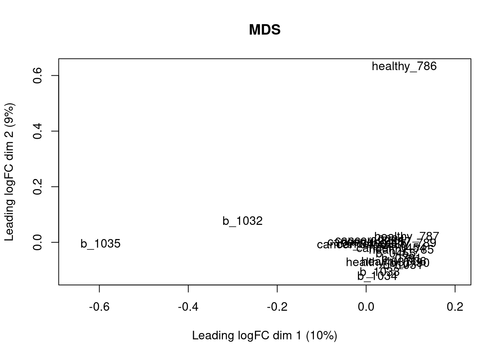
filter the betas
sample_cols <- setdiff(names(all_cov), c("seqnames", "start"))all_cov_filt <- all_cov[rowSums(all_cov[, sample_cols] >= 10, na.rm = FALSE) == length(sample_cols),]
all_cov_filt <- na.omit(all_cov_filt)
c(all = nrow(all_cov), filt = nrow(all_cov_filt)) all filt
28637250 1217609 all_beta_filt <- all_beta %>% semi_join(all_cov_filt, by = c("seqnames", "start"))plotMDS(as.matrix(all_beta_filt[,3:22]), top = 10000, labels = colnames(all_beta_filt)[3:22], main = "MDS")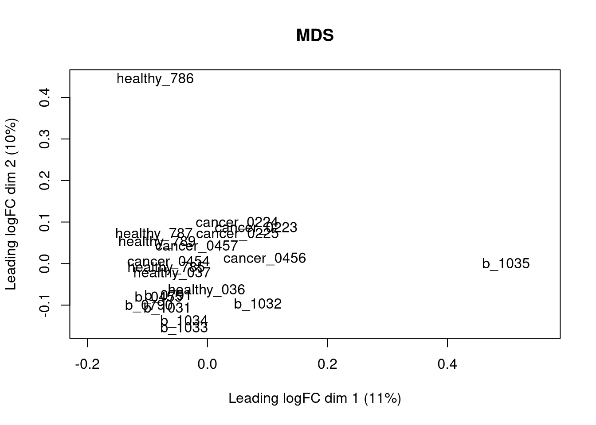
plotMDS(as.matrix(all_beta_filt[,3:22]), top = 500000, labels = colnames(all_beta_filt)[3:22], main = "MDS")
take out sex?
plotMDS(as.matrix(filter(all_beta_filt, !seqnames %in% c("chrX", "chrY"))[,3:22]), top = 500000, labels = colnames(all_beta_filt)[3:22], main = "MDS")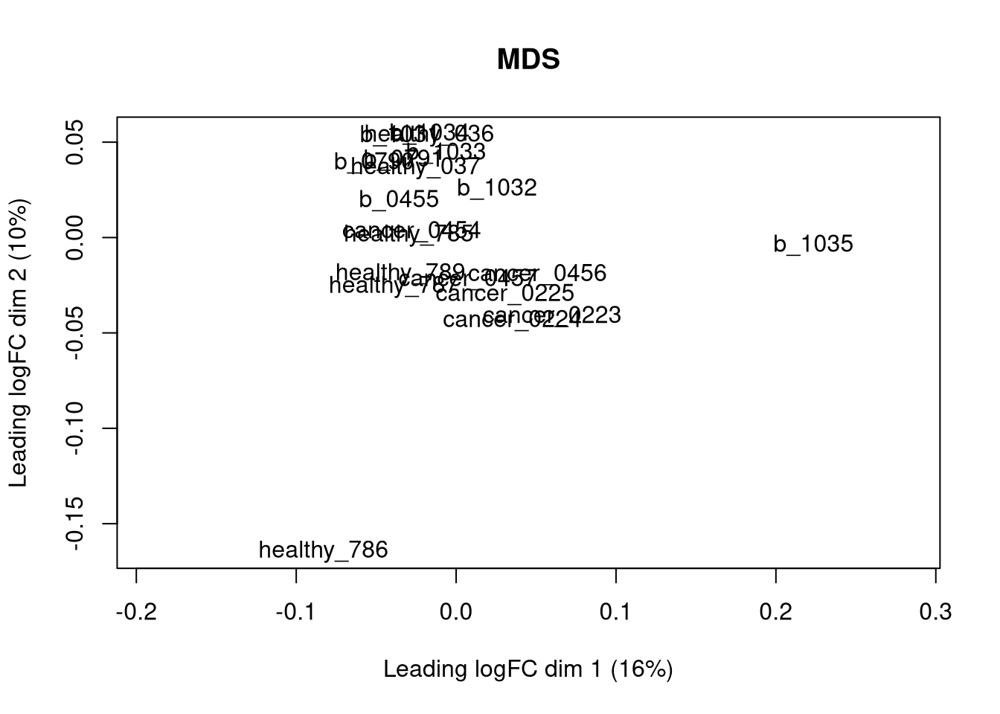
metadata <- read.csv("/researchers/caitlin.page/cf_nano/r_output/PPGL_twist_annotated.csv")#cancer only
all_beta_c <- all_beta[,c(1:2,9:22)]plotMDS(as.matrix(filter(all_beta_filt, !seqnames %in% c("chrX", "chrY"))[,3:22]), top = 500000, labels = colnames(all_beta_filt)[3:22], main = "MDS")
metadata_filt <- metadata %>%
mutate(my_col_name = case_when(
lib_ID == "LPRJ241035" ~ "b_1035",
lib_ID == "LPRJ241034" ~ "b_1034",
lib_ID == "LPRJ241033" ~ "b_1033",
lib_ID == "LPRJ241032" ~ "b_1032",
lib_ID == "LPRJ241031" ~ "b_1031",
lib_ID == "LPRJ240791" ~ "b_0791",
lib_ID == "LPRJ240790" ~ "b_0790",
lib_ID == "LPRJ230455" ~ "b_0455",
lib_ID == "LPRJ230457" ~ "cancer_0457",
lib_ID == "LPRJ230456" ~ "cancer_0456",
lib_ID == "LPRJ230454" ~ "cancer_0454",
lib_ID == "LPRJ230225" ~ "cancer_0225",
lib_ID == "LPRJ230224" ~ "cancer_0224",
lib_ID == "LPRJ230223" ~ "cancer_0223"))
metadata_filt <- metadata_filt %>% filter(!is.na(my_col_name))coloured by patient
patients <- unique(metadata_filt$patient)
colours <- setNames(
c("#E41A1C", "#377EB8", "#4DAF4A", "#984EA3", "#FF7F00",
"#A65628", "#F781BF", "#999999", "#00BCD4", "#FFEB3B"),
patients
)
metadata_filt <- metadata_filt %>%
mutate(colour = colours[as.character(patient)],
patient = factor(patient))
metadata_filt <- metadata_filt[match(colnames(all_beta_c)[3:16], metadata_filt$my_col_name),]
col_vec <- colours[as.character(metadata_filt$patient)]
plotMDS(as.matrix(filter(all_beta_filt, !seqnames %in% c("chrX", "chrY"))[,9:22]), col = col_vec, top = 500000, labels = colnames(all_beta_filt)[9:22], main = "MDS")
legend("topright",
legend = patients,
col = colours[as.character(patients)],
pch = 16,
cex = 0.8)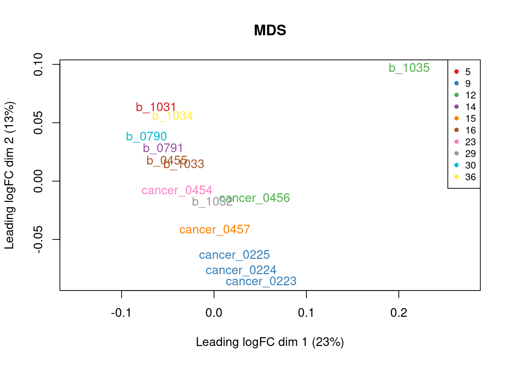
all dims
plotMDS(as.matrix(all_beta_filt[,9:22]), col = col_vec, top = 500000, labels = colnames(all_beta_filt)[9:22], dim.plot = c(2,3), main = "Dim 2 vs 3")
legend("topright",
legend = patients,
col = colours[as.character(patients)],
pch = 16,
cex = 0.8)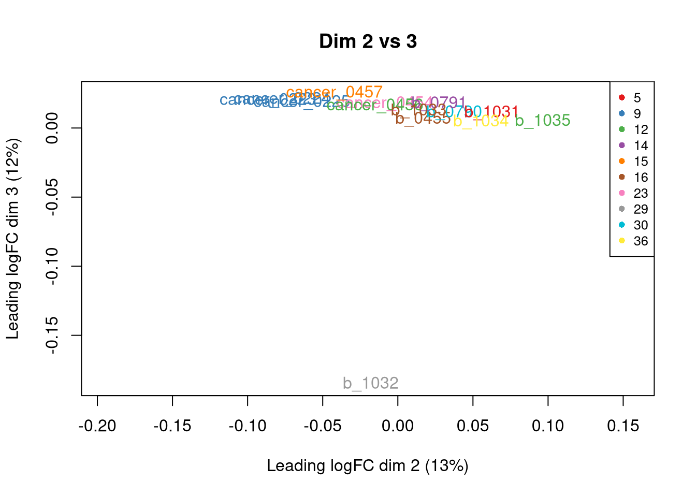
plotMDS(as.matrix(all_beta_filt[,9:22]), col = col_vec, top = 500000, labels = colnames(all_beta_filt)[9:22], dim.plot = c(3,4), main = "Dim 3 vs 4")
legend("topright",
legend = patients,
col = colours[as.character(patients)],
pch = 16,
cex = 0.8)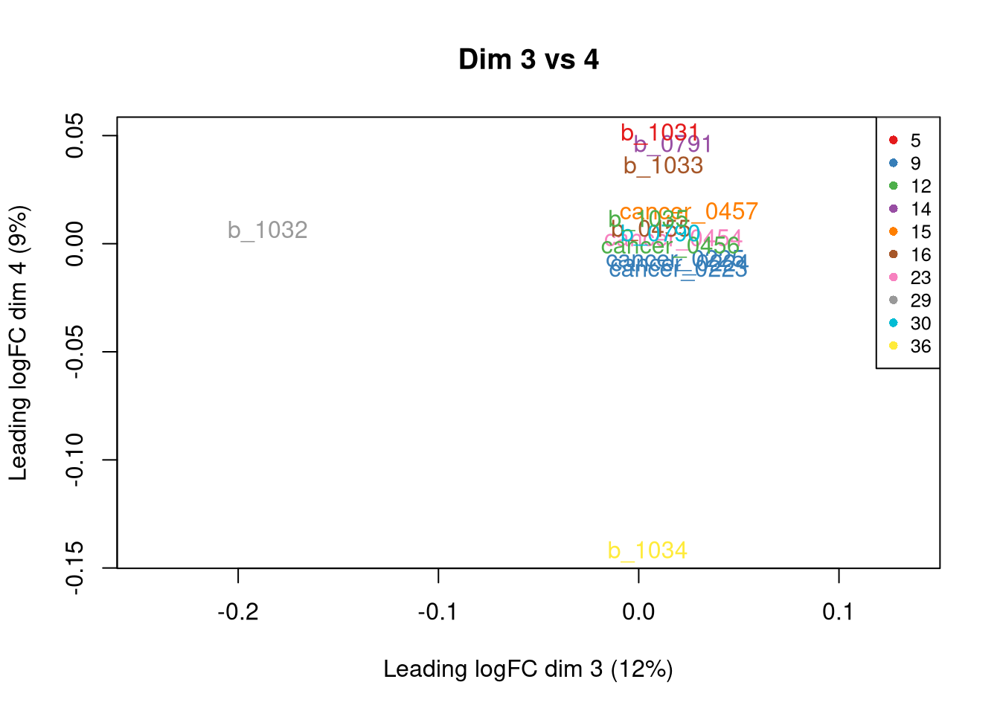
plotMDS(as.matrix(all_beta_filt[,9:22]), col = col_vec, top = 500000, labels = colnames(all_beta_filt)[9:22], dim.plot = c(4,5), main = "Dim 4 vs 5")
legend("topright",
legend = patients,
col = colours[as.character(patients)],
pch = 16,
cex = 0.8)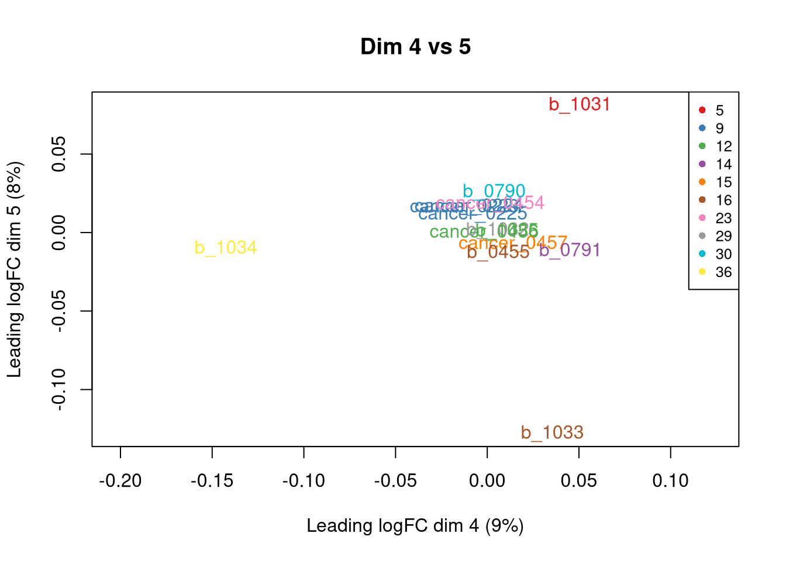
coloured by sex
sex <- unique(metadata_filt$sex)
colours <- setNames(
c("#E41A1C", "#377EB8"),
sex
)
metadata_filt <- metadata_filt %>%
mutate(colour = colours[as.character(sex)],
sex = factor(sex))
#metadata_filt <- metadata_filt[match(colnames(all_beta_c)[3:16], metadata_filt$my_col_name),]
col_vec <- colours[as.character(metadata_filt$sex)]
plotMDS(as.matrix(filter(all_beta_filt, !seqnames %in% c("chrX", "chrY"))[,9:22]), col = col_vec, top = 500000, labels = colnames(all_beta_filt)[9:22], main = "MDS")
legend("topright",
legend = sex,
col = colours[as.character(sex)],
pch = 16,
cex = 0.8)
plotMDS(as.matrix(all_beta_filt[,9:22]), col = col_vec, top = 500000, labels = colnames(all_beta_filt)[9:22], main = "MDS")
legend("topright",
legend = sex,
col = colours[as.character(sex)],
pch = 16,
cex = 0.8)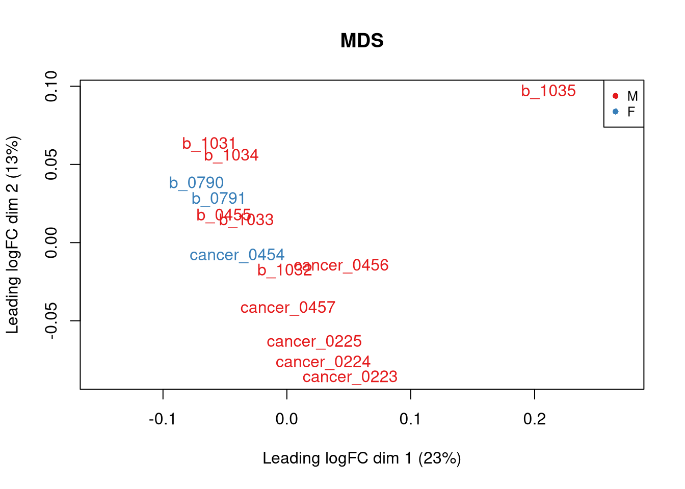
sex <- unique(metadata_filt$sex)
colours <- setNames(
c("#E41A1C", "#377EB8"),
sex
)
metadata_filt <- metadata_filt %>%
mutate(colour = colours[as.character(sex)],
sex = factor(sex))
#metadata_filt <- metadata_filt[match(colnames(all_beta_c)[3:16], metadata_filt$my_col_name),]
col_vec <- c(rep(colours[1], times = 2), rep(colours[2], times = 4), colours[as.character(metadata_filt$sex)])
plotMDS(as.matrix(all_beta_filt[,3:22]), col = col_vec, top = 500000, labels = colnames(all_beta_filt)[3:22], main = "MDS")
legend("topright",
legend = sex,
col = colours[as.character(sex)],
pch = 16,
cex = 0.8)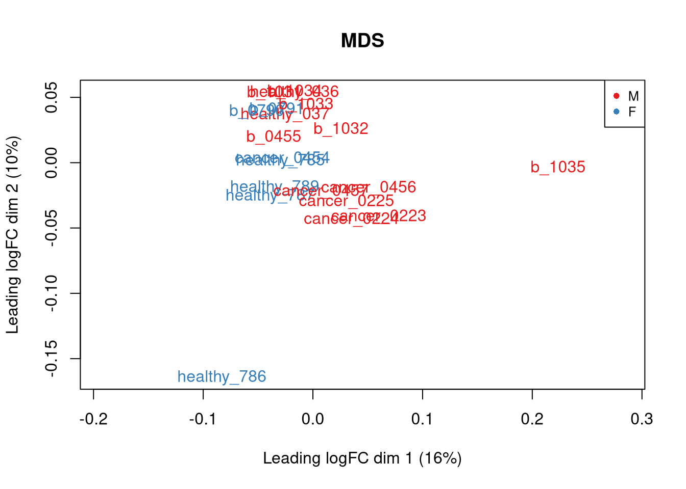
*036 and 037 are male, rest healthy femaleplotMDS(as.matrix(all_beta_filt[,3:22]), col = col_vec, top = 500000, labels = colnames(all_beta_filt)[3:22], dim.plot = c(2,3), main = "Dim 2 vs 3")
legend("topright",
legend = sex,
col = colours[as.character(sex)],
pch = 16,
cex = 0.8)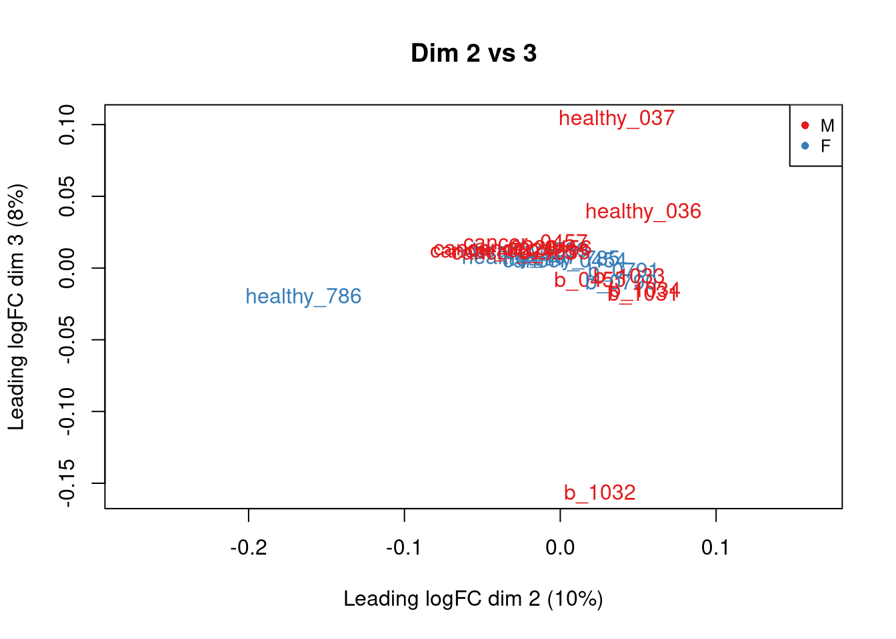
plotMDS(as.matrix(all_beta_filt[,3:22]), col = col_vec, top = 500000, labels = colnames(all_beta_filt)[3:22], dim.plot = c(3,4), main = "Dim 3 vs 4")
legend("topright",
legend = sex,
col = colours[as.character(sex)],
pch = 16,
cex = 0.8)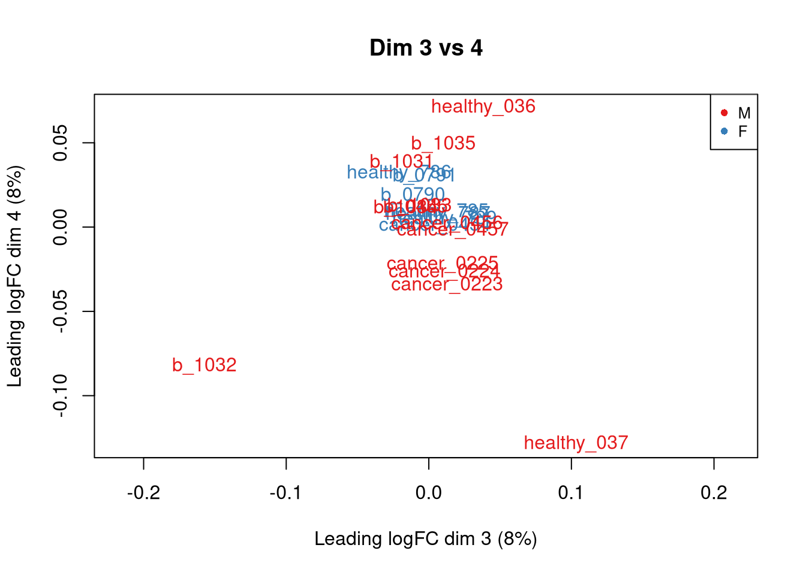
plotMDS(as.matrix(all_beta_filt[,3:22]), col = col_vec, top = 500000, labels = colnames(all_beta_filt)[3:22], dim.plot = c(4,5), main = "Dim 4 vs 5")
legend("topright",
legend = sex,
col = colours[as.character(sex)],
pch = 16,
cex = 0.8)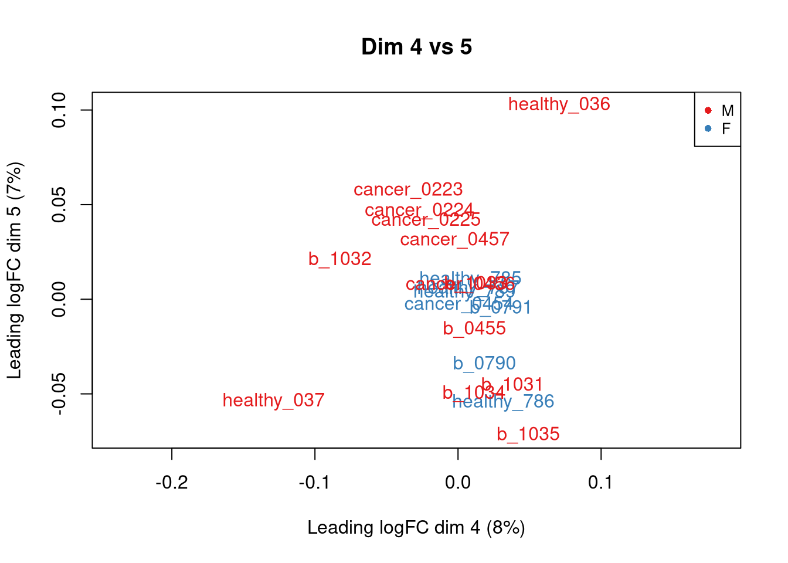
ichor fraction
ichor <- sort(unique(metadata_filt$ichor_fraction))
colours <- setNames(
c("#E41A1C", "#377EB8", "#4DAF4A", "#984EA3", "#FF7F00",
"#A65628", "#F781BF", "#999999", "#00BCD4", "#17BECF",
"#8C564B"),
ichor
)
col_vec <- colours[as.character(metadata_filt$ichor_fraction)]
plotMDS(as.matrix(all_beta_filt[,9:22]), col = col_vec, top = 500000, labels = colnames(all_beta_filt)[9:22], main = "MDS")
legend("topright",
legend = ichor,
col = colours[as.character(ichor)],
pch = 16,
cex = 0.8)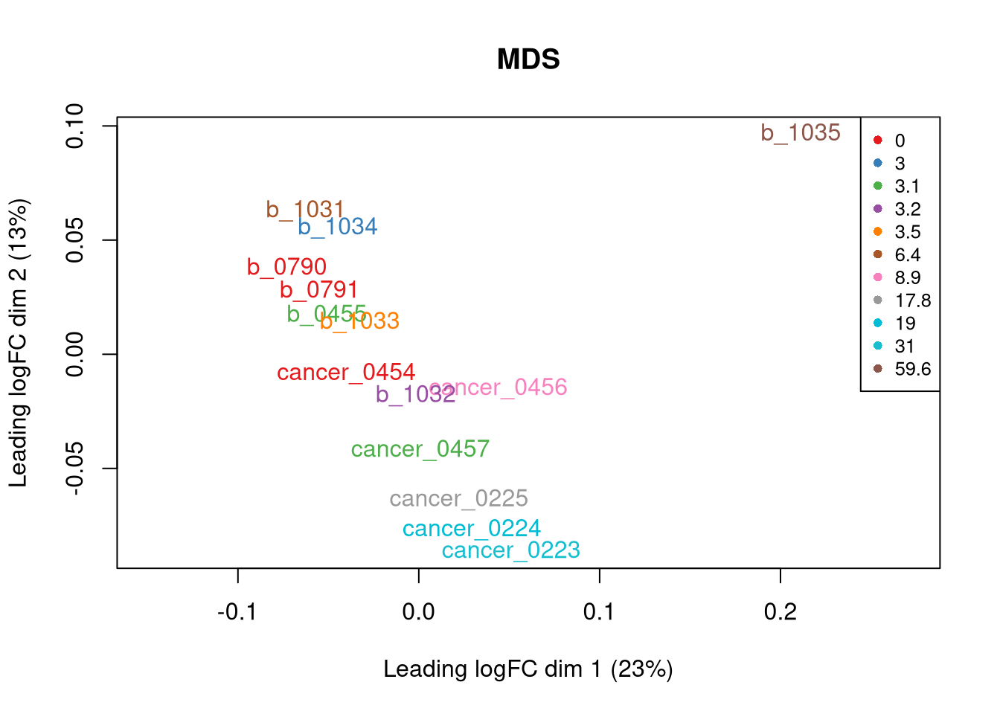
if_g <- c("0", "<5", "5<if<10", "10<if<20", "30<if<40", ">50")metadata_filt <- metadata_filt %>%
mutate(ichor_group = case_when(ichor_fraction == 0 ~ "0",
ichor_fraction > 0 & ichor_fraction < 5 ~ "<5",
ichor_fraction > 5 & ichor_fraction < 10 ~ "5<if<10",
ichor_fraction > 10 & ichor_fraction < 20 ~ "10<if<20",
ichor_fraction > 30 & ichor_fraction < 40 ~ "30<if<40",
ichor_fraction > 50 ~ ">50"))
ichor <- if_g
colours <- setNames(
c("#E41A1C", "#377EB8", "#4DAF4A", "#984EA3", "#FF7F00",
"#A65628"),
ichor
)
col_vec <- colours[as.character(metadata_filt$ichor_group)]
plotMDS(as.matrix(all_beta_filt[,9:22]), col = col_vec, top = 500000, labels = colnames(all_beta_filt)[9:22], main = "MDS")
legend("bottomright",
legend = ichor,
col = colours[as.character(ichor)],
pch = 16,
cex = 0.8)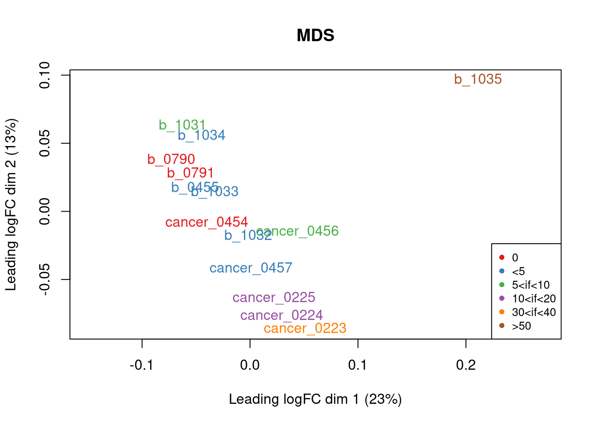
* healthy would also havecol_vec <- c(rep(colours[1], times = 6), colours[as.character(metadata_filt$ichor_group)])
plotMDS(as.matrix(all_beta_filt[,3:22]), col = col_vec, top = 500000, labels = colnames(all_beta_filt)[3:22], main = "MDS")
legend("bottomright",
legend = ichor,
col = colours[as.character(ichor)],
pch = 16,
cex = 0.8)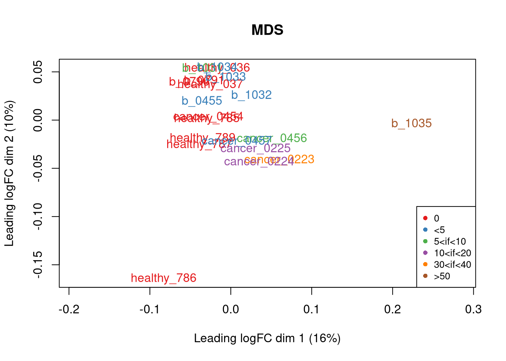
dims
plotMDS(as.matrix(all_beta_filt[,3:22]), col = col_vec, top = 500000, labels = colnames(all_beta_filt)[3:22], dim.plot = c(2,3), main = "Dim 2 vs 3")
legend("topright",
legend = ichor,
col = colours[as.character(ichor)],
pch = 16,
cex = 0.8)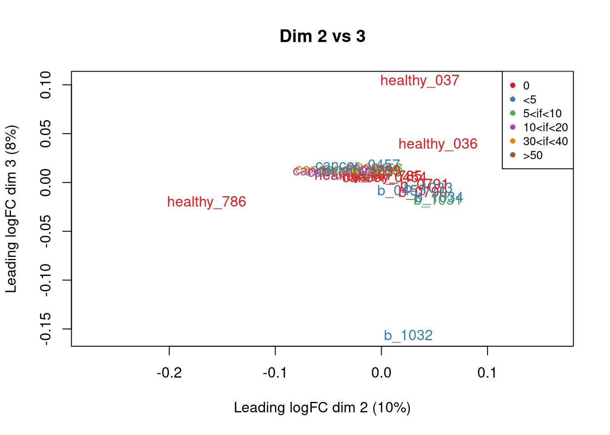
plotMDS(as.matrix(all_beta_filt[,3:22]), col = col_vec, top = 500000, labels = colnames(all_beta_filt)[3:22], dim.plot = c(3,4), main = "Dim 3 vs 4")
legend("topright",
legend = ichor,
col = colours[as.character(ichor)],
pch = 16,
cex = 0.8)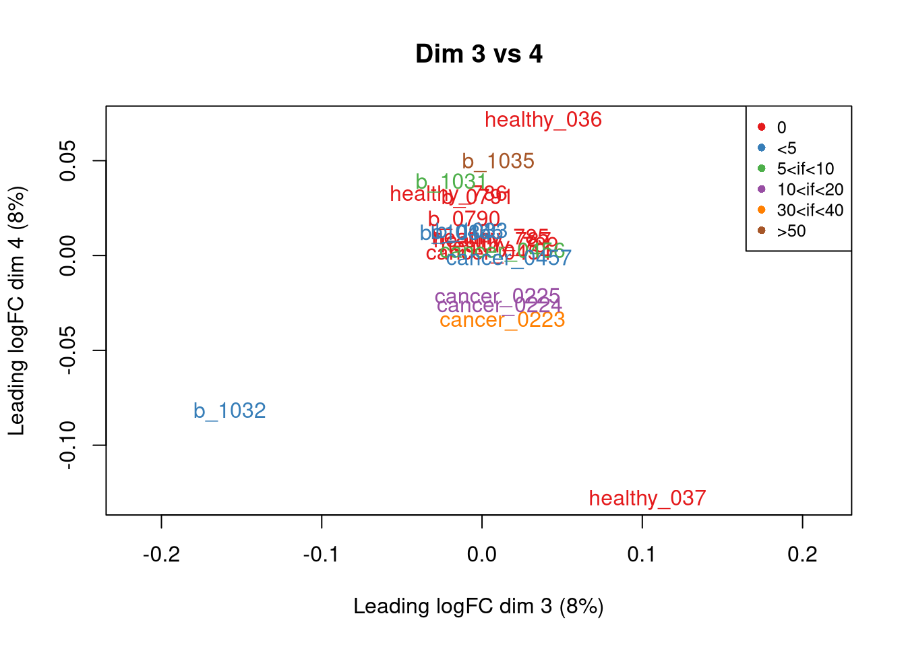
plotMDS(as.matrix(all_beta_filt[,3:22]), col = col_vec, top = 500000, labels = colnames(all_beta_filt)[3:22], dim.plot = c(4,5), main = "Dim 4 vs 5")
legend("topright",
legend = ichor,
col = colours[as.character(ichor)],
pch = 16,
cex = 0.8)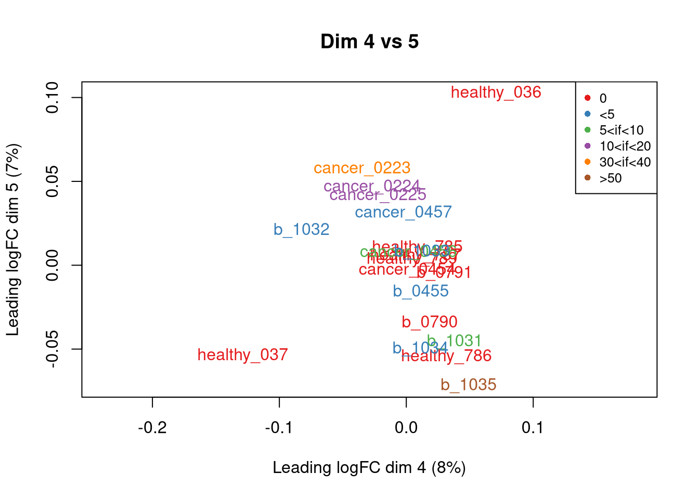
cancer subtype
subtype <- unique(metadata_filt$genotype)
colours <- setNames(
c("#E41A1C", "#377EB8", "#4DAF4A", "#984EA3", "#FF7F00",
"#A65628"),
subtype
)
col_vec <- colours[as.character(metadata_filt$genotype)]
plotMDS(as.matrix(all_beta_filt[,9:22]), col = col_vec, top = 500000, labels = colnames(all_beta_filt)[9:22], main = "MDS")
legend("bottomright",
legend = subtype,
col = colours[as.character(subtype)],
pch = 16,
cex = 0.8)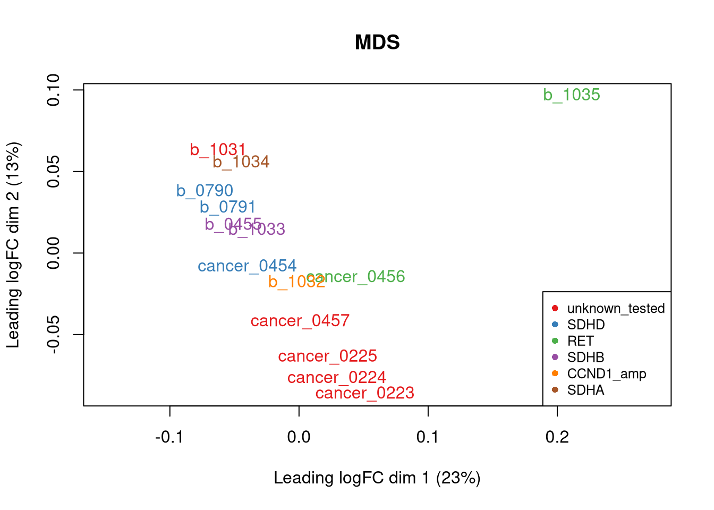
dims
plotMDS(as.matrix(all_beta_filt[,9:22]), col = col_vec, top = 500000, labels = colnames(all_beta_filt)[9:22], dim.plot = c(2,3), main = "Dim 2 vs 3")
legend("bottomright",
legend = subtype,
col = colours[as.character(subtype)],
pch = 16,
cex = 0.8)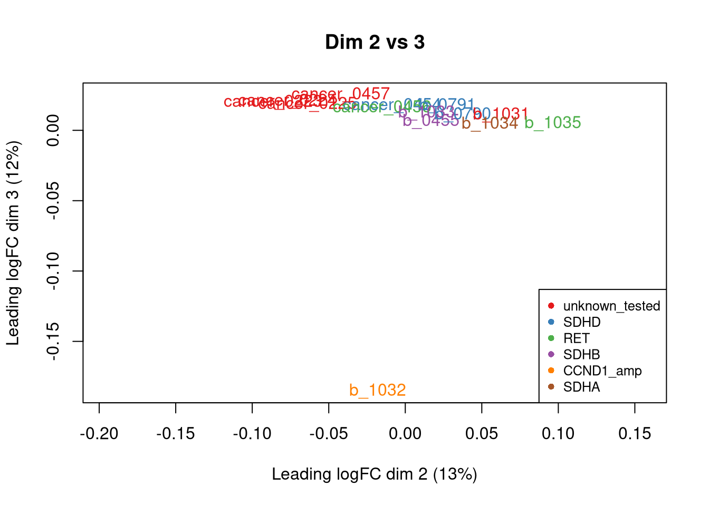
plotMDS(as.matrix(all_beta_filt[,9:22]), col = col_vec, top = 500000, labels = colnames(all_beta_filt)[9:22], dim.plot = c(3,4), main = "Dim 3 vs 4")
legend("bottomright",
legend = subtype,
col = colours[as.character(subtype)],
pch = 16,
cex = 0.8)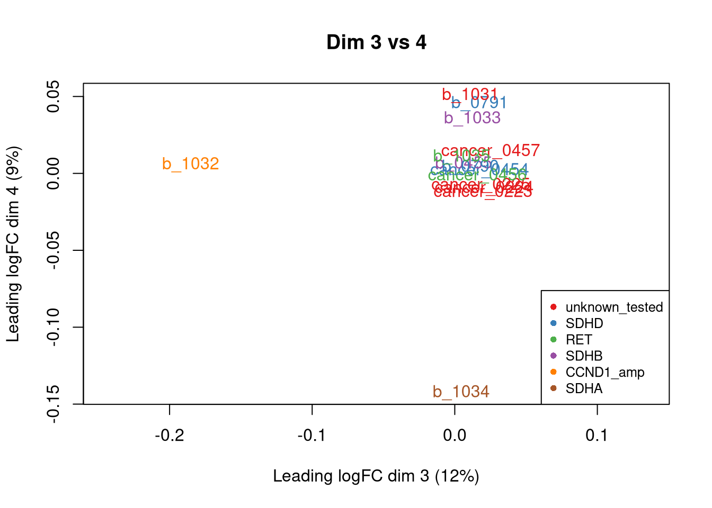
plotMDS(as.matrix(all_beta_filt[,9:22]), col = col_vec, top = 500000, labels = colnames(all_beta_filt)[9:22], dim.plot = c(4,5), main = "Dim 4 vs 5")
legend("bottomright",
legend = subtype,
col = colours[as.character(subtype)],
pch = 16,
cex = 0.8)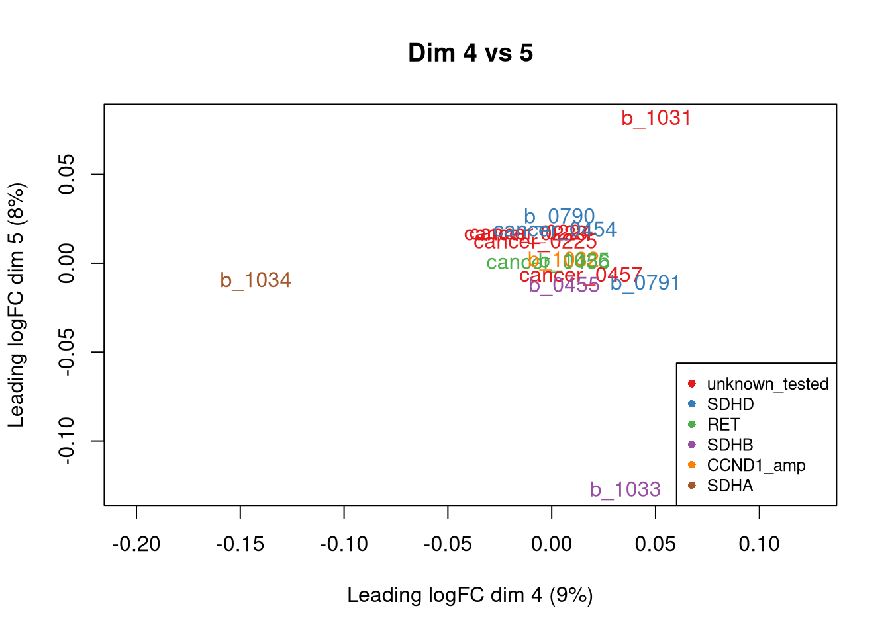
sessionInfo()R version 4.4.2 (2024-10-31)
Platform: x86_64-pc-linux-gnu
Running under: Red Hat Enterprise Linux 9.6 (Plow)
Matrix products: default
BLAS/LAPACK: FlexiBLAS OPENBLAS-OPENMP; LAPACK version 3.9.0
locale:
[1] LC_CTYPE=en_AU.UTF-8 LC_NUMERIC=C
[3] LC_TIME=en_AU.UTF-8 LC_COLLATE=en_AU.UTF-8
[5] LC_MONETARY=en_AU.UTF-8 LC_MESSAGES=en_AU.UTF-8
[7] LC_PAPER=en_AU.UTF-8 LC_NAME=C
[9] LC_ADDRESS=C LC_TELEPHONE=C
[11] LC_MEASUREMENT=en_AU.UTF-8 LC_IDENTIFICATION=C
time zone: Australia/Melbourne
tzcode source: system (glibc)
attached base packages:
[1] stats4 stats graphics grDevices utils datasets methods
[8] base
other attached packages:
[1] edgeR_4.4.2 limma_3.62.2 purrr_1.0.4
[4] ggplot2_3.5.1 dplyr_1.1.4 stringr_1.5.1
[7] tidyr_1.3.1 plyranges_1.26.0 GenomicRanges_1.58.0
[10] GenomeInfoDb_1.42.3 IRanges_2.40.1 S4Vectors_0.44.0
[13] BiocGenerics_0.52.0 data.table_1.17.0
loaded via a namespace (and not attached):
[1] SummarizedExperiment_1.36.0 gtable_0.3.6
[3] rjson_0.2.23 xfun_0.51
[5] bslib_0.9.0 Biobase_2.66.0
[7] lattice_0.22-7 vctrs_0.6.5
[9] tools_4.4.2 bitops_1.0-9
[11] generics_0.1.3 curl_6.2.1
[13] parallel_4.4.2 tibble_3.2.1
[15] pkgconfig_2.0.3 Matrix_1.7-4
[17] lifecycle_1.0.4 GenomeInfoDbData_1.2.13
[19] compiler_4.4.2 git2r_0.36.2
[21] Rsamtools_2.22.0 Biostrings_2.74.1
[23] statmod_1.5.0 munsell_0.5.1
[25] codetools_0.2-20 httpuv_1.6.15
[27] htmltools_0.5.8.1 sass_0.4.9
[29] RCurl_1.98-1.17 yaml_2.3.10
[31] later_1.4.1 pillar_1.10.1
[33] crayon_1.5.3 jquerylib_0.1.4
[35] whisker_0.4.1 BiocParallel_1.40.0
[37] cachem_1.1.0 DelayedArray_0.32.0
[39] abind_1.4-8 locfit_1.5-9.12
[41] tidyselect_1.2.1 digest_0.6.37
[43] stringi_1.8.4 restfulr_0.0.15
[45] rprojroot_2.0.4 fastmap_1.2.0
[47] grid_4.4.2 colorspace_2.1-1
[49] cli_3.6.4 SparseArray_1.6.2
[51] magrittr_2.0.3 S4Arrays_1.6.0
[53] utf8_1.2.4 XML_3.99-0.18
[55] withr_3.0.2 scales_1.3.0
[57] UCSC.utils_1.2.0 promises_1.3.2
[59] rmarkdown_2.29 XVector_0.46.0
[61] httr_1.4.7 matrixStats_1.5.0
[63] workflowr_1.7.1 evaluate_1.0.3
[65] knitr_1.50 BiocIO_1.16.0
[67] rtracklayer_1.66.0 rlang_1.1.5
[69] Rcpp_1.0.14 glue_1.8.0
[71] rstudioapi_0.17.1 jsonlite_1.9.1
[73] R6_2.6.1 MatrixGenerics_1.18.1
[75] GenomicAlignments_1.42.0 fs_1.6.5
[77] zlibbioc_1.52.0